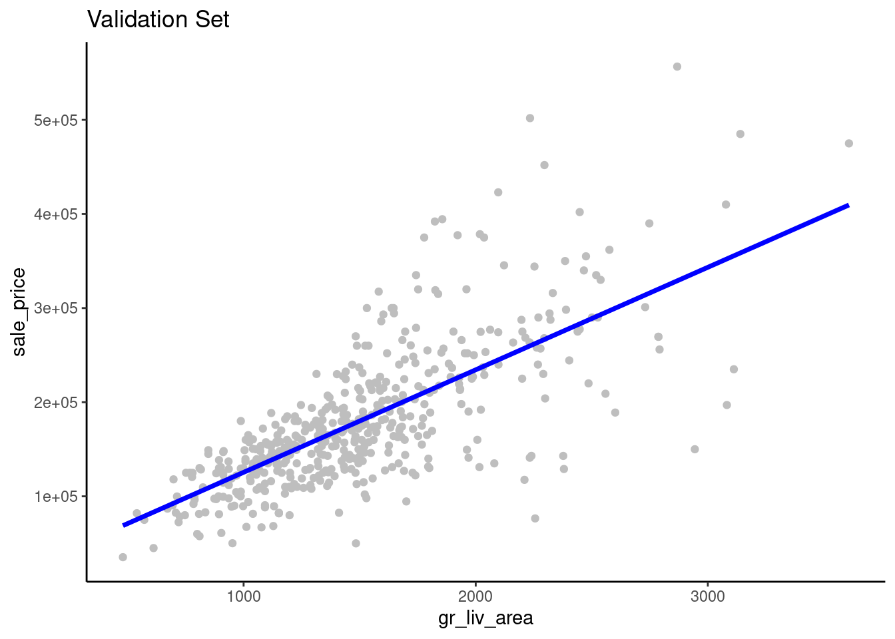
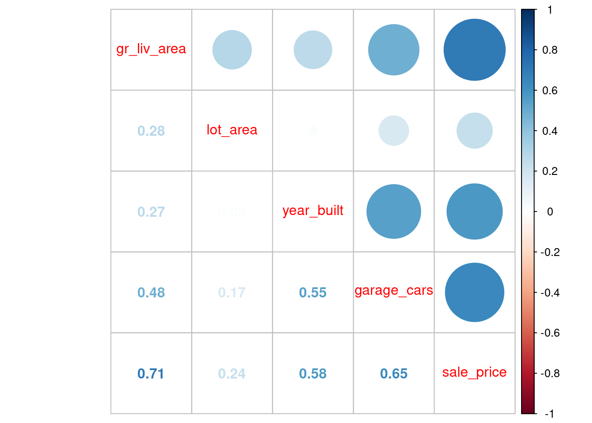
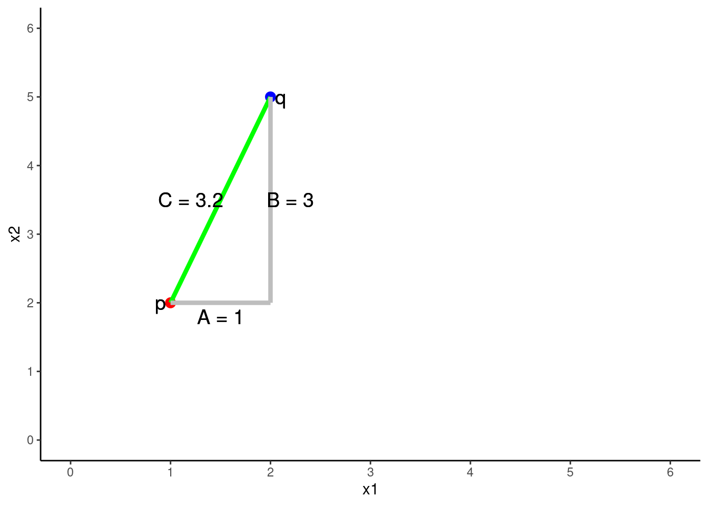
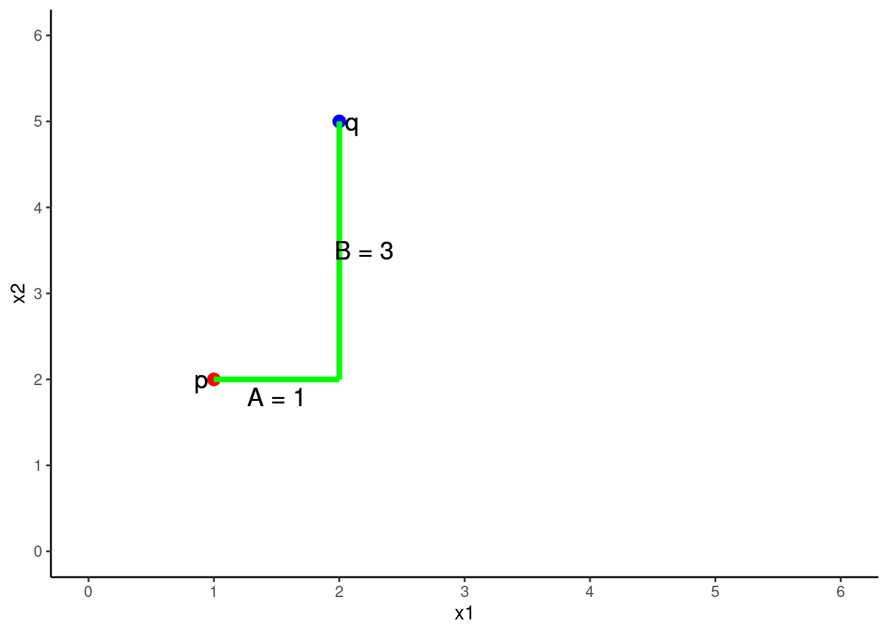
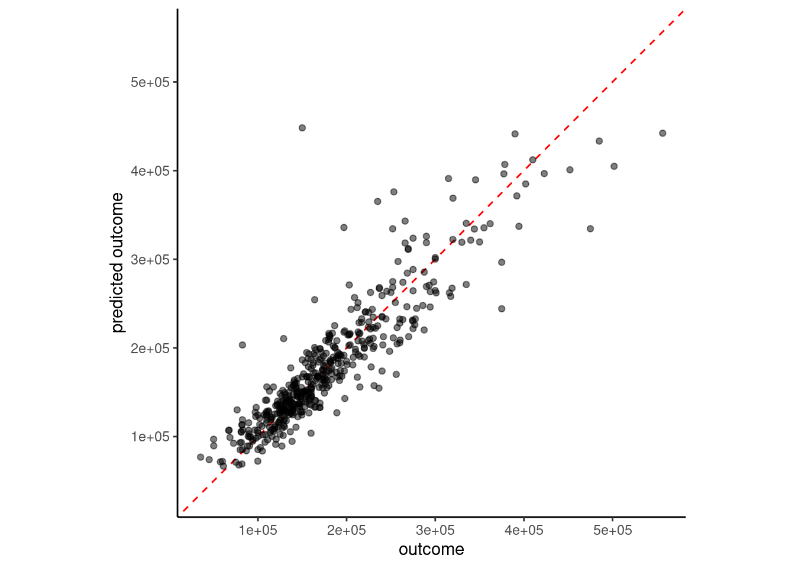
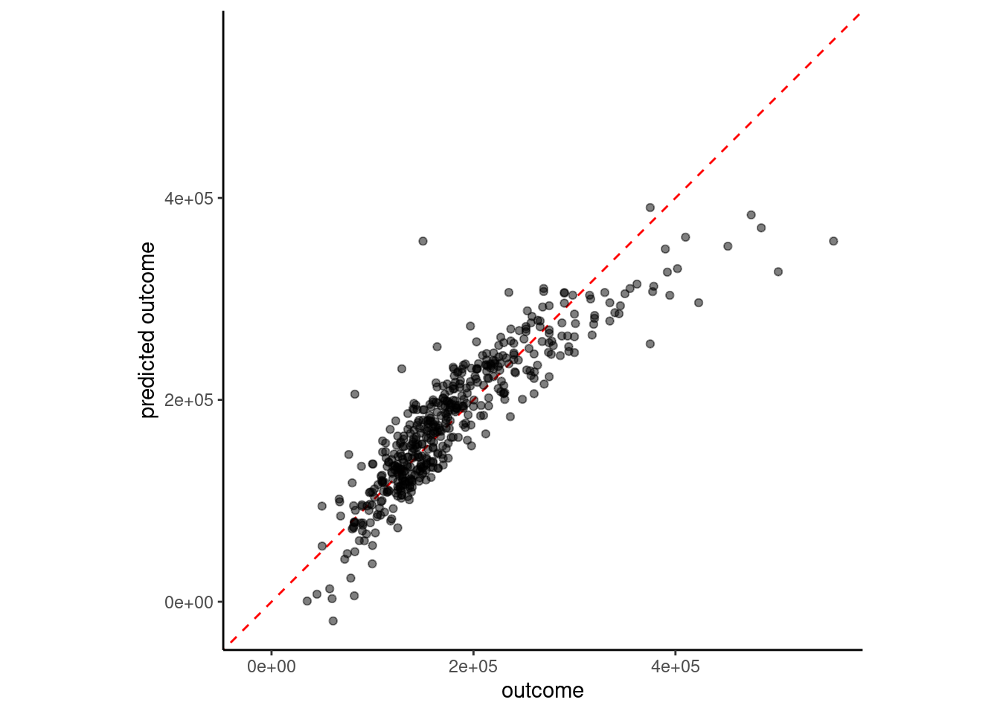

options(conflicts.policy = "depends.ok")
devtools::source_url("https://github.com/jjcurtin/lab_support/blob/main/fun_ml.R?raw=true")ℹ SHA-1 hash of file is "175d942e14f108d74912bfb2593b77637328ecb1"tidymodels_conflictRules()Learning Objectives:
Use of root mean square error (RMSE) in training and validation sets for model performance evaluation
The General Linear Model as a machine learning model
K Nearest Neighbor (KNN)
Readings
Lecture Videos
Application Assignment
Post questions to the Slack channel for application assignments.
Submit the application assignment here and complete the unit quiz by 5 pm on Wednesday, February 8th
Our goal in this unit is to build a machine learning regression model that can accurately (we hope) predict the sale_price for future sales of houses (in Iowa? more generally?)
To begin this project we need to:
options(conflicts.policy = "depends.ok")
devtools::source_url("https://github.com/jjcurtin/lab_support/blob/main/fun_ml.R?raw=true")ℹ SHA-1 hash of file is "175d942e14f108d74912bfb2593b77637328ecb1"tidymodels_conflictRules()library(janitor, include.only = "clean_names")
library(cowplot, include.only = "plot_grid") # for plot_grid()
library(kableExtra, exclude = "group_rows") # exclude dplyr conflict
library(tidyverse) # for general data wrangling
library(tidymodels) # for modelingdevtools::source_url("https://github.com/jjcurtin/lab_support/blob/main/fun_eda.R?raw=true")ℹ SHA-1 hash of file is "c045eee2655a18dc85e715b78182f176327358a7"devtools::source_url("https://github.com/jjcurtin/lab_support/blob/main/fun_plots.R?raw=true")ℹ SHA-1 hash of file is "def6ce26ed7b2493931fde811adff9287ee8d874"theme_set(theme_classic())
options(tibble.width = Inf)path_data <- "./data"class_ames <- function(df){
df |>
mutate(across(where(is.character), factor)) |>
mutate(overall_qual = factor(overall_qual),
overall_qual = fct_relevel(overall_qual, as.character(1:10)),
1 garage_qual = suppressWarnings(fct_relevel(garage_qual,
c("no_garage", "po", "fa",
"ta", "gd", "ex"))))
}suppressWarnings()
data_trn <-
read_csv(here::here(path_data, "ames_clean_class_trn.csv"),
col_types = cols()) |>
class_ames() |>
glimpse()Rows: 1,465
Columns: 10
$ sale_price <dbl> 105000, 126000, 115000, 120000, 99500, 112000, 122000, 12…
$ gr_liv_area <dbl> 896, 882, 864, 836, 918, 1902, 900, 1225, 1728, 858, 1306…
$ lot_area <dbl> 11622, 8400, 10500, 2280, 7892, 8930, 9819, 9320, 13260, …
$ year_built <dbl> 1961, 1970, 1971, 1975, 1979, 1978, 1967, 1959, 1962, 195…
$ overall_qual <fct> 5, 4, 4, 7, 6, 6, 5, 4, 5, 5, 3, 5, 4, 5, 3, 5, 2, 6, 5, …
$ garage_cars <dbl> 1, 2, 0, 1, 1, 2, 1, 0, 0, 0, 0, 1, 2, 2, 1, 1, 2, 2, 1, …
$ garage_qual <fct> ta, ta, no_garage, ta, ta, ta, ta, no_garage, no_garage, …
$ ms_zoning <fct> res_high, res_low, res_low, res_low, res_low, res_med, re…
$ lot_config <fct> inside, corner, fr2, fr2, inside, inside, inside, inside,…
$ bldg_type <fct> one_fam, one_fam, one_fam, town_inside, town_end, duplex,…data_val <- read_csv(here::here(path_data, "ames_clean_class_val.csv"),
col_types = cols()) |>
class_ames() |>
glimpse()Rows: 490
Columns: 10
$ sale_price <dbl> 215000, 189900, 189000, 171500, 212000, 164000, 394432, 1…
$ gr_liv_area <dbl> 1656, 1629, 1804, 1341, 1502, 1752, 1856, 1004, 1092, 106…
$ lot_area <dbl> 31770, 13830, 7500, 10176, 6820, 12134, 11394, 11241, 168…
$ year_built <dbl> 1960, 1997, 1999, 1990, 1985, 1988, 2010, 1970, 1971, 197…
$ overall_qual <fct> 6, 5, 7, 7, 8, 8, 9, 6, 5, 6, 7, 9, 8, 8, 7, 8, 6, 5, 5, …
$ garage_cars <dbl> 2, 2, 2, 2, 2, 2, 3, 2, 1, 2, 2, 2, 2, 3, 2, 3, 1, 1, 2, …
$ garage_qual <fct> ta, ta, ta, ta, ta, ta, ta, ta, ta, ta, ta, ta, ta, ta, t…
$ ms_zoning <fct> res_low, res_low, res_low, res_low, res_low, res_low, res…
$ lot_config <fct> corner, inside, inside, inside, corner, inside, corner, c…
$ bldg_type <fct> one_fam, one_fam, one_fam, one_fam, town_end, one_fam, on…NOTE: Remember, I have held back an additional test set that we will use only once to evaluate the final model that we each develop in this unit.
We will also make a dataframe to track validation error across the models we fit
error_val <- tibble(model = character(), rmse_val = numeric()) |>
glimpse()Rows: 0
Columns: 2
$ model <chr>
$ rmse_val <dbl> We will fit regression models with various model configurations.
These configurations will differ with respect to statistical algorithm:
These configurations will differ with respect to the features
To build models that will work well in new data (e.g., the data that I have held back from you so far):
We have split the remaining data into a training and validation set for our own use during model building
We will fit models in train
We will evaluate them in validation
Remember that we:
sale_price) split of the data at the end of cleaning EDAYou will work with all of my predictors and all the predictors you used for your EDA when you do the application assignment for this unit
Pause for a moment to answer this question: [Why do we need independent validation data to select the best model configuration? In other words, why cant we just fit and evaluate all of the models in our one training set?].{red} 1
Let’s take a quick look at the available raw predictors in the training set
data_trn |> skim_all()| Name | data_trn |
| Number of rows | 1465 |
| Number of columns | 10 |
| _______________________ | |
| Column type frequency: | |
| factor | 5 |
| numeric | 5 |
| ________________________ | |
| Group variables | None |
Variable type: factor
| skim_variable | n_missing | complete_rate | n_unique | top_counts |
|---|---|---|---|---|
| overall_qual | 0 | 1 | 10 | 5: 424, 6: 350, 7: 304, 8: 176 |
| garage_qual | 0 | 1 | 5 | ta: 1312, no_: 81, fa: 57, gd: 13 |
| ms_zoning | 0 | 1 | 7 | res: 1157, res: 217, flo: 66, com: 13 |
| lot_config | 0 | 1 | 5 | ins: 1095, cor: 248, cul: 81, fr2: 39 |
| bldg_type | 0 | 1 | 5 | one: 1216, tow: 108, dup: 63, tow: 46 |
Variable type: numeric
| skim_variable | n_missing | complete_rate | mean | sd | p0 | p25 | p50 | p75 | p100 | skew | kurtosis |
|---|---|---|---|---|---|---|---|---|---|---|---|
| sale_price | 0 | 1 | 180696.15 | 78836.41 | 12789 | 129500 | 160000 | 213500 | 745000 | 1.64 | 4.60 |
| gr_liv_area | 0 | 1 | 1506.84 | 511.44 | 438 | 1128 | 1450 | 1759 | 5642 | 1.43 | 5.19 |
| lot_area | 0 | 1 | 10144.16 | 8177.55 | 1476 | 7500 | 9375 | 11362 | 164660 | 11.20 | 182.91 |
| year_built | 0 | 1 | 1971.35 | 29.65 | 1880 | 1953 | 1972 | 2000 | 2010 | -0.54 | -0.62 |
| garage_cars | 1 | 1 | 1.78 | 0.76 | 0 | 1 | 2 | 2 | 4 | -0.26 | 0.10 |
Remember from our modeling EDA that we have some issues to address as part of our feature engineering:
sale_priceAll of this will be accomplished with a recipe
But first, let’s consider our first statistical algorithm
We will start with a review of the use of the simple (one feature) linear model (LM) as a machine learning model because you should be very familiar with this statistical model at this point
\(Y = \beta_0 + \beta_1*X_1 + \epsilon\)
Applied to our regression problem, we might fit a model such as:
\(sale\_price = \beta_0 + \beta_1*gr\_liv\_area + \epsilon\)
The GLM is a parametric model. We need to estimate two parameters, \(\beta_0\) and \(\beta_1\), using our training dataset.
You already know how to do this using lm() in base R. However, we will use the tidymodels modeling approach.
We use tidymodels because:
To fit a model with a specific configuration, we need to:
prep() it with training databake() it with data you want to use to calculate feature matrixThese steps are accomplished with functions from the recipes and parsnip packages.
We will start with a simple model configuration
gr_liv_area)Set up a VERY SIMPLE feature engineering recipe
~~.rec <-
recipe(sale_price ~ gr_liv_area, data = data_trn)summary(rec)# A tibble: 2 × 4
variable type role source
<chr> <list> <chr> <chr>
1 gr_liv_area <chr [2]> predictor original
2 sale_price <chr [2]> outcome originalrec── Recipe ──────────────────────────────────────────────────────────────────────── Inputs Number of variables by roleoutcome: 1
predictor: 1We can then prep the recipe and bake the data to make our feature matrix from the training dataset
data_trn and then bake data_trnrec_prep <- rec |>
prep(training = data_trn)
feat_trn <- rec_prep |>
bake(new_data = data_trn)You should always review the feature matrix to make sure it looks as you expect
sale_price)gr_liv_area)feat_trn |> skim_all()| Name | feat_trn |
| Number of rows | 1465 |
| Number of columns | 2 |
| _______________________ | |
| Column type frequency: | |
| numeric | 2 |
| ________________________ | |
| Group variables | None |
Variable type: numeric
| skim_variable | n_missing | complete_rate | mean | sd | p0 | p25 | p50 | p75 | p100 | skew | kurtosis |
|---|---|---|---|---|---|---|---|---|---|---|---|
| gr_liv_area | 0 | 1 | 1506.84 | 511.44 | 438 | 1128 | 1450 | 1759 | 5642 | 1.43 | 5.19 |
| sale_price | 0 | 1 | 180696.15 | 78836.41 | 12789 | 129500 | 160000 | 213500 | 745000 | 1.64 | 4.60 |
Now let’s consider the statistical algorithm
tidymodels breaks this apart into two pieces for claritylinear_reg(), nearest_neighbor(), logistic_reg()tidymodels calls this setting the enginelm, kknn, glm, glmnetYou can see the available engines (and modes: regression vs. classification) for the broad classes of algorithms
We will work with many of these algorithms later in the course
show_engines("linear_reg")# A tibble: 7 × 2
engine mode
<chr> <chr>
1 lm regression
2 glm regression
3 glmnet regression
4 stan regression
5 spark regression
6 keras regression
7 brulee regressionshow_engines("nearest_neighbor")# A tibble: 2 × 2
engine mode
<chr> <chr>
1 kknn classification
2 kknn regression show_engines("logistic_reg")# A tibble: 7 × 2
engine mode
<chr> <chr>
1 glm classification
2 glmnet classification
3 LiblineaR classification
4 spark classification
5 keras classification
6 stan classification
7 brulee classificationshow_engines("decision_tree")# A tibble: 5 × 2
engine mode
<chr> <chr>
1 rpart classification
2 rpart regression
3 C5.0 classification
4 spark classification
5 spark regression show_engines("rand_forest")# A tibble: 6 × 2
engine mode
<chr> <chr>
1 ranger classification
2 ranger regression
3 randomForest classification
4 randomForest regression
5 spark classification
6 spark regression show_engines("mlp")# A tibble: 6 × 2
engine mode
<chr> <chr>
1 keras classification
2 keras regression
3 nnet classification
4 nnet regression
5 brulee classification
6 brulee regression There are some additional engines we will use in the course in the discrim package
library(discrim, exclude = "smoothness")
show_engines("discrim_linear") # A tibble: 4 × 2
engine mode
<chr> <chr>
1 MASS classification
2 mda classification
3 sda classification
4 sparsediscrim classificationshow_engines("discrim_regularized") # A tibble: 1 × 2
engine mode
<chr> <chr>
1 klaR classificationshow_engines("naive_Bayes")# A tibble: 2 × 2
engine mode
<chr> <chr>
1 klaR classification
2 naivebayes classificationYou can also better understand how the engine will be called using translate()
Not useful here but will be with more complicated algorithms
linear_reg() |>
set_engine("lm") |>
translate()Linear Regression Model Specification (regression)
Computational engine: lm
Model fit template:
stats::lm(formula = missing_arg(), data = missing_arg(), weights = missing_arg())Let’s combine our feature matrix with an algorithm to fit a model in our training set features using only raw gr_liv_area as a feature
Note the specification of
lm are only for the regression mode). to indicate all features in the matrix.
gr_liv_area. for all features and use of feature matrix from training set
We can get the parameter estimates, standard errors, and statistical tests for each \(\beta\) = 0 for this model using tidy() from the broom package (loaded as part of the tidyverse)
fit_lm_1 |> tidy()# A tibble: 2 × 5
term estimate std.error statistic p.value
<chr> <dbl> <dbl> <dbl> <dbl>
1 (Intercept) 16561. 4537. 3.65 2.72e- 4
2 gr_liv_area 109. 2.85 38.2 4.78e-222There are a variety of ways to pull out the estimates for each feature (and intercept)
Option 1: Pull all estimates from the tidy object
fit_lm_1 |>
tidy() |>
pull(estimate)[1] 16560.9991 108.9268Option 2: Extract a single estimate using $ and row number. Be careful that order of features won’t change! This assumes the feature coefficient for the relevant feature is always the second coefficient.
tidy(fit_lm_1)$estimate[[2]][1] 108.9268Option 3: Extract a single estimate using $ and match to term. Safer
fit_lm_1 |>
tidy() |>
filter(term == "gr_liv_area") |>
pull(estimate)[1] 108.9268Best to write a function if we plan to do this a lot. This function in included in fun_ml.R
get_estimate <- function(the_fit, the_term){
the_fit |>
tidy() |>
filter(term == the_term) |>
pull(estimate)
}Now we can use this function whenever we need a coefficient
get_estimate(fit_lm_1, "gr_liv_area")[1] 108.9268get_estimate(fit_lm_1, "(Intercept)")[1] 16561Regardless of the method, we now have a simple parametric model for sale_price
\(\hat{sale\_price} = 1.6561\times 10^{4} + 108.9 * gr\_liv\_area\)
We can get the predicted values for sale_price (i.e., \(\hat{sale\_price}\)) in our validation set using predict()
However, we first need to make a feature matrix from our validation set
data_val) to create features for the training set (feat_val)feat_val <- rec_prep |>
bake(new_data = data_val)As always, we should skim these new features
feat_val |> skim_all()| Name | feat_val |
| Number of rows | 490 |
| Number of columns | 2 |
| _______________________ | |
| Column type frequency: | |
| numeric | 2 |
| ________________________ | |
| Group variables | None |
Variable type: numeric
| skim_variable | n_missing | complete_rate | mean | sd | p0 | p25 | p50 | p75 | p100 | skew | kurtosis |
|---|---|---|---|---|---|---|---|---|---|---|---|
| gr_liv_area | 0 | 1 | 1493.0 | 483.78 | 480 | 1143.5 | 1436 | 1729.5 | 3608 | 0.92 | 1.16 |
| sale_price | 0 | 1 | 178512.8 | 75493.59 | 35311 | 129125.0 | 160000 | 213000.0 | 556581 | 1.42 | 2.97 |
Now we can get predictions using our model with validation features
predict() returns a dataframe with one column named .pred and one row for every observation in dataframe (e.g., validation feature set)
predict(fit_lm_1, feat_val)# A tibble: 490 × 1
.pred
<dbl>
1 196944.
2 194003.
3 213065.
4 162632.
5 180169.
6 207401.
7 218729.
8 125923.
9 135509.
10 133004.
# ℹ 480 more rowsWe can visualize how well this model performs in the validation set by plotting predicted sale_price (\(\hat{sale\_price}\)) vs. sale_price (ground truth in machine learning terminology) for these data
We might do this a lot so let’s write a function (We have included this function in fun_ml.R)
plot_truth <- function(truth, estimate) {
ggplot(mapping = aes(x = truth, y = estimate)) +
geom_abline(lty = 2) +
geom_point(alpha = 0.5) +
labs(y = "predicted outcome", x = "outcome") +
coord_obs_pred() # scale axes uniformly
}Now make the plot
plot_truth(truth = feat_val$sale_price,
estimate = predict(fit_lm_1, feat_val)$.pred)
Perfect performance would have all the points right on the dotted line (same value for actual and predicted outcome)
sale_price and gr_liv_area were positively skewedWe can quantify model performance by selecting a performance metric
yardstick package within the tidymodels framework supports calculation of many performance metrics for regression and classification modelsRoot mean square error (RMSE) is a common performance metric for regression models
rmse_vec() from the yardstick packagermse_vec(truth = feat_val$sale_price,
estimate = predict(fit_lm_1, feat_val)$.pred)[1] 51375.08Let’s record how well this model performed in validation so we can compare it to subsequent models
error_val <- bind_rows(error_val,
tibble(model = "simple linear model",
rmse_val = rmse_vec(truth = feat_val$sale_price,
estimate = predict(fit_lm_1, feat_val)$.pred)))
error_val# A tibble: 1 × 2
model rmse_val
<chr> <dbl>
1 simple linear model 51375.For explanatory purposes, we might want to visualize the relationship between a raw predictor and the outcome (in addition to examining the parameter estimates and the associated statistical tests)
gr_liv_area superimposed over a scatterplot of the raw data from the validation setfeat_val |>
ggplot(aes(x = gr_liv_area)) +
geom_point(aes(y = sale_price), color = "gray") +
geom_line(aes(y = predict(fit_lm_1, data_val)$.pred),
linewidth = 1.25, color = "blue") +
ggtitle("Validation Set")
gr_liv_area and sale_price.sale_price (and possibly gr_liv_area)We can improve model performance by moving from simple linear model to a linear model with multiple features derived from multiple predictors
We have many other numeric variables available to use, even in this pared down version of the dataset.
data_trn |> skim_all()| Name | data_trn |
| Number of rows | 1465 |
| Number of columns | 10 |
| _______________________ | |
| Column type frequency: | |
| factor | 5 |
| numeric | 5 |
| ________________________ | |
| Group variables | None |
Variable type: factor
| skim_variable | n_missing | complete_rate | n_unique | top_counts |
|---|---|---|---|---|
| overall_qual | 0 | 1 | 10 | 5: 424, 6: 350, 7: 304, 8: 176 |
| garage_qual | 0 | 1 | 5 | ta: 1312, no_: 81, fa: 57, gd: 13 |
| ms_zoning | 0 | 1 | 7 | res: 1157, res: 217, flo: 66, com: 13 |
| lot_config | 0 | 1 | 5 | ins: 1095, cor: 248, cul: 81, fr2: 39 |
| bldg_type | 0 | 1 | 5 | one: 1216, tow: 108, dup: 63, tow: 46 |
Variable type: numeric
| skim_variable | n_missing | complete_rate | mean | sd | p0 | p25 | p50 | p75 | p100 | skew | kurtosis |
|---|---|---|---|---|---|---|---|---|---|---|---|
| sale_price | 0 | 1 | 180696.15 | 78836.41 | 12789 | 129500 | 160000 | 213500 | 745000 | 1.64 | 4.60 |
| gr_liv_area | 0 | 1 | 1506.84 | 511.44 | 438 | 1128 | 1450 | 1759 | 5642 | 1.43 | 5.19 |
| lot_area | 0 | 1 | 10144.16 | 8177.55 | 1476 | 7500 | 9375 | 11362 | 164660 | 11.20 | 182.91 |
| year_built | 0 | 1 | 1971.35 | 29.65 | 1880 | 1953 | 1972 | 2000 | 2010 | -0.54 | -0.62 |
| garage_cars | 1 | 1 | 1.78 | 0.76 | 0 | 1 | 2 | 2 | 4 | -0.26 | 0.10 |
Let’s expand our model to also include lot_area, year_built, and garage_cars
Again, we need:
With the addition of new predictors, we now have a feature engineering task
garage_cars in the training setA simple solution is to do median imputation - substitute the median of the non-missing scores for any missing score.
tidymodels websiteLet’s add this to our recipe. All of the defaults are appropriate but you should see ?step_impute_median() to review them
rec <-
1 recipe(sale_price ~ gr_liv_area + lot_area + year_built + garage_cars,
data = data_trn) |>
step_impute_median(garage_cars)+ between them
We can review this recipe to see what it will do
summary(rec)# A tibble: 5 × 4
variable type role source
<chr> <list> <chr> <chr>
1 gr_liv_area <chr [2]> predictor original
2 lot_area <chr [2]> predictor original
3 year_built <chr [2]> predictor original
4 garage_cars <chr [2]> predictor original
5 sale_price <chr [2]> outcome originalrec── Recipe ──────────────────────────────────────────────────────────────────────── Inputs Number of variables by roleoutcome: 1
predictor: 4── Operations • Median imputation for: garage_carsNow we need to
rec_prep <- rec |>
1 prep(data_trn)training = to save some typing
feat_trn <- rec_prep |>
1 bake(data_trn)
feat_trn |> skim_all()new_data = to save some typing
| Name | feat_trn |
| Number of rows | 1465 |
| Number of columns | 5 |
| _______________________ | |
| Column type frequency: | |
| numeric | 5 |
| ________________________ | |
| Group variables | None |
Variable type: numeric
| skim_variable | n_missing | complete_rate | mean | sd | p0 | p25 | p50 | p75 | p100 | skew | kurtosis |
|---|---|---|---|---|---|---|---|---|---|---|---|
| gr_liv_area | 0 | 1 | 1506.84 | 511.44 | 438 | 1128 | 1450 | 1759 | 5642 | 1.43 | 5.19 |
| lot_area | 0 | 1 | 10144.16 | 8177.55 | 1476 | 7500 | 9375 | 11362 | 164660 | 11.20 | 182.91 |
| year_built | 0 | 1 | 1971.35 | 29.65 | 1880 | 1953 | 1972 | 2000 | 2010 | -0.54 | -0.62 |
| garage_cars | 0 | 1 | 1.78 | 0.76 | 0 | 1 | 2 | 2 | 4 | -0.26 | 0.10 |
| sale_price | 0 | 1 | 180696.15 | 78836.41 | 12789 | 129500 | 160000 | 213500 | 745000 | 1.64 | 4.60 |
feat_val <- rec_prep |>
bake(data_val)Now let’s combine our algorithm and training features to fit this model configuration with 4 features
fit_lm_4 <-
linear_reg() |>
set_engine("lm") |>
1 fit(sale_price ~ ., data = feat_trn). is a bit more useful now
This yields these parameter estimates (which as we know from 610/710 were selected to minimize SSE in the training set):
fit_lm_4 |> tidy()# A tibble: 5 × 5
term estimate std.error statistic p.value
<chr> <dbl> <dbl> <dbl> <dbl>
1 (Intercept) -1665041. 89370. -18.6 1.14e- 69
2 gr_liv_area 76.8 2.62 29.3 3.56e-149
3 lot_area 0.514 0.146 3.51 4.60e- 4
4 year_built 854. 46.2 18.5 7.66e- 69
5 garage_cars 22901. 1964. 11.7 4.09e- 30Here is our parametric model
\(\hat{sale\_price} = -1.6650409\times 10^{6} + 76.8 * gr\_liv\_area + 0.5 * lot\_area + 854.3 * year\_built + 2.29008\times 10^{4} * garage\_cars\)
Compared with our previous simple regression model:
\(\hat{sale\_price} = 1.6561\times 10^{4} + 108.9 * gr\_liv\_area\)
Of course, these four features are correlated both with sale_price but also with each other
Let’s look at correlations in the training set.
feat_trn |>
cor() |>
corrplot::corrplot.mixed()
[What are the implications of the correlations among many of these predictors?].{red} 2
How well does this more complex model perform in validation? Let’s compare the previous and current visualizations of sale_price vs. \(\hat{sale\_price}\)
plot_1 <- plot_truth(truth = feat_val$sale_price,
estimate = predict(fit_lm_1, feat_val)$.pred)
plot_4 <- plot_truth(truth = feat_val$sale_price,
estimate = predict(fit_lm_4, feat_val)$.pred)
plot_grid(plot_1, plot_4,
labels = list("1 feature", "4 features"), hjust = -1.5)
Coding sidebar: Notice the use of plot_grid() from the cowplot package to make side by side plots. This also required returning the individual plots as objects (just assign to a object name, e.g., plot_1)
Let’s compare model performance for the two models using RMSE in the validation set
rmse_vec(feat_val$sale_price,
predict(fit_lm_1, feat_val)$.pred)[1] 51375.08rmse_vec(feat_val$sale_price,
predict(fit_lm_4, feat_val)$.pred)[1] 39903.25Let’s bind it to our results table
error_val <-
bind_rows(error_val,
tibble(model = "4 feature linear model",
rmse_val = rmse_vec(feat_val$sale_price, predict(fit_lm_4, feat_val)$.pred)))
error_val# A tibble: 2 × 2
model rmse_val
<chr> <dbl>
1 simple linear model 51375.
2 4 feature linear model 39903.Given the non-linearity suggested by the truth vs. estimate plots, we might wonder if we could improve the fit if we transformed our features to be closer to normal
There are a number of recipe functions that do transformations (see Step Functions - Individual Transformations)
We will apply step_YeoJohnson(), which is similar to a Box-Cox transformation but can be more broadly applied because the scores don’t need to be strictly positive
Let’s do it all again!
rec <-
recipe(sale_price ~ gr_liv_area + lot_area + year_built + garage_cars,
data = data_trn) |>
step_impute_median(garage_cars) |>
step_YeoJohnson(lot_area, gr_liv_area, year_built, garage_cars)
rec── Recipe ──────────────────────────────────────────────────────────────────────── Inputs Number of variables by roleoutcome: 1
predictor: 4── Operations • Median imputation for: garage_cars• Yeo-Johnson transformation on: lot_area, gr_liv_area, year_built, ...rec_prep <- rec |>
prep(data_trn)Use prepped recipe to bake the training set into features
feat_trn <- rec_prep |>
bake(data_trn)
feat_trn |> skim_all()| Name | feat_trn |
| Number of rows | 1465 |
| Number of columns | 5 |
| _______________________ | |
| Column type frequency: | |
| numeric | 5 |
| ________________________ | |
| Group variables | None |
Variable type: numeric
| skim_variable | n_missing | complete_rate | mean | sd | p0 | p25 | p50 | p75 | p100 | skew | kurtosis |
|---|---|---|---|---|---|---|---|---|---|---|---|
| gr_liv_area | 0 | 1 | 5.22 | 0.16 | 4.60 | 5.11 | 5.23 | 5.33 | 5.86 | 0.00 | 0.12 |
| lot_area | 0 | 1 | 14.10 | 1.14 | 10.32 | 13.69 | 14.20 | 14.64 | 21.65 | 0.08 | 5.46 |
| year_built | 0 | 1 | 1971.35 | 29.65 | 1880.00 | 1953.00 | 1972.00 | 2000.00 | 2010.00 | -0.54 | -0.62 |
| garage_cars | 0 | 1 | 2.12 | 0.98 | 0.00 | 1.11 | 2.37 | 2.37 | 5.23 | -0.03 | 0.04 |
| sale_price | 0 | 1 | 180696.15 | 78836.41 | 12789.00 | 129500.00 | 160000.00 | 213500.00 | 745000.00 | 1.64 | 4.60 |
Use same prepped recipe to bake the validation set into features
feat_val <- rec_prep |>
bake(data_val)
feat_val |> skim_all()| Name | feat_val |
| Number of rows | 490 |
| Number of columns | 5 |
| _______________________ | |
| Column type frequency: | |
| numeric | 5 |
| ________________________ | |
| Group variables | None |
Variable type: numeric
| skim_variable | n_missing | complete_rate | mean | sd | p0 | p25 | p50 | p75 | p100 | skew | kurtosis |
|---|---|---|---|---|---|---|---|---|---|---|---|
| gr_liv_area | 0 | 1 | 5.22 | 0.16 | 4.65 | 5.11 | 5.23 | 5.32 | 5.66 | -0.17 | 0.19 |
| lot_area | 0 | 1 | 14.14 | 1.17 | 10.57 | 13.69 | 14.24 | 14.72 | 22.44 | 0.11 | 6.12 |
| year_built | 0 | 1 | 1971.08 | 30.96 | 1875.00 | 1954.00 | 1975.00 | 2000.00 | 2010.00 | -0.66 | -0.41 |
| garage_cars | 0 | 1 | 2.06 | 0.96 | 0.00 | 1.11 | 2.37 | 2.37 | 5.23 | 0.01 | 0.24 |
| sale_price | 0 | 1 | 178512.82 | 75493.59 | 35311.00 | 129125.00 | 160000.00 | 213000.00 | 556581.00 | 1.42 | 2.97 |
fit_lm_4yj <-
linear_reg() |>
set_engine("lm") |>
fit(sale_price ~ ., data = feat_trn)plot_truth(truth = feat_val$sale_price,
estimate = predict(fit_lm_4yj, feat_val)$.pred)
error_val <- bind_rows(error_val,
tibble(model = "4 feature linear model with YJ",
rmse_val = rmse_vec(feat_val$sale_price,
predict(fit_lm_4yj, feat_val)$.pred)))
error_val# A tibble: 3 × 2
model rmse_val
<chr> <dbl>
1 simple linear model 51375.
2 4 feature linear model 39903.
3 4 feature linear model with YJ 41660.That didn’t help at all.
We may need to consider
sale_price (We will leave that to you for the application assignment!)Many important predictors in our models may be categorical (ordered and unordered)
tidymodels website for more detailsFor many algorithms, we will need to use feature engineering to convert a categorical predictor to numeric features. One common technique is to use dummy coding. When dummy coding a predictor, we transform the original categorical predictor with m levels into m-1 dummy coded features.
To better understand how and why we do this, lets consider a version of ms_zoning in the Ames dataset.
data_trn |>
pull(ms_zoning) |>
table()
agri commer float indus res_high res_low res_med
2 13 66 1 9 1157 217 We will recode ms_zoning to have only 3 levels to make our example simple (though dummy codes can be used for predictors with any number of levels)
data_dummy <- data_trn |>
1 select(sale_price, ms_zoning) |>
2 mutate(ms_zoning3 = fct_collapse(ms_zoning,
"residential" = c("res_high", "res_med", "res_low"),
"commercial" = c("agri", "commer", "indus"),
3 "floating" = "float")) |>
4 select(-ms_zoning)sale_price and ms_zoning
fct_collapse() from the forcats package is our preferred way to collapse levels of a factor. See fct_recode() for more generic recoding of levels.
ms_zoning predictor
Take a look at the new predictor
data_dummy |>
pull(ms_zoning3) |>
table()
commercial floating residential
16 66 1383 We need to convert this three-level, unordered categorical predictor (currently classed as a factor) to numeric features to allow us to use it in statistical algorithms like the general linear model.
[Why can’t we simply recode each level with a different consecutive value (e.g., commercial = 1, floating =2 , residential = 3)?].{red} 3
Imagine fitting a straight line to predict sale_price from ms_zoning3 using these three different ways to arbitrarily assign numbers to levels.
data_dummy |>
mutate(ms_zoning3 = case_when(ms_zoning3 == "residential" ~ 1,
ms_zoning3 == "commercial" ~ 2,
ms_zoning3 == "floating" ~ 3)) |>
ggplot(aes(x = ms_zoning3, y = sale_price)) +
geom_bar(stat="summary", fun = "mean")
data_dummy |>
mutate(ms_zoning3 = case_when(ms_zoning3 == "residential" ~ 2,
ms_zoning3 == "commercial" ~ 1,
ms_zoning3 == "floating" ~ 3)) |>
ggplot(aes(x = ms_zoning3, y = sale_price)) +
geom_bar(stat="summary", fun = "mean")
data_dummy |>
mutate(ms_zoning3 = case_when(ms_zoning3 == "residential" ~ 3,
ms_zoning3 == "commercial" ~ 1,
ms_zoning3 == "floating" ~ 2)) |>
ggplot(aes(x = ms_zoning3, y = sale_price)) +
geom_bar(stat="summary", fun = "mean")
Dummy coding resolves this issue.
When using dummy codes, we transform (i.e., feature engineer) our original m-level categorical predictor to m-1 dummy features.
For example, with our three-level predictor: ms_zoning3
We need 2 features (f1, f2) to represent this 3-level categorical predictor
Feature 1 is coded 1 for residential and 0 for all other levels
Feature 2 is coded 1 for floating and 0 for all other levels
Here is this coding scheme displayed in a table
# A tibble: 3 × 3
ms_zoning3 f1 f2
<chr> <dbl> <dbl>
1 commercial 0 0
2 residential 1 0
3 floating 0 1With this coding:
We can add these two features manually to the data frame and view a handful of observations to make this coding scheme more concrete
# A tibble: 8 × 4
sale_price ms_zoning3 f1 f2
<dbl> <fct> <dbl> <dbl>
1 105000 residential 1 0
2 126000 residential 1 0
3 13100 commercial 0 0
4 115000 residential 1 0
5 149500 floating 0 1
6 40000 commercial 0 0
7 120000 residential 1 0
8 151000 floating 0 1If we now fit a model where we predict sale_price from these two dummy coded features, each feature would represent the contrast of the mean sale_price for the level coded 1 vs. the mean sale_price for the level that is coded 0 for all features (i.e., commercial)
sale_price for residential vs. commercialsale_price for floating vs. commercialms_zoning3 on sale_priceLets do this quickly in base r using lm() as you have done previously in 610.
m <- lm(sale_price ~ f1 + f2, data = data_dummy)
m |> summary()
Call:
lm(formula = sale_price ~ f1 + f2, data = data_dummy)
Residuals:
Min 1Q Median 3Q Max
-166952 -50241 -20241 31254 565259
Coefficients:
Estimate Std. Error t value Pr(>|t|)
(Intercept) 81523 19409 4.200 2.83e-05 ***
f1 98219 19521 5.031 5.47e-07 ***
f2 143223 21634 6.620 5.03e-11 ***
---
Signif. codes: 0 '***' 0.001 '**' 0.01 '*' 0.05 '.' 0.1 ' ' 1
Residual standard error: 77640 on 1462 degrees of freedom
Multiple R-squared: 0.03151, Adjusted R-squared: 0.03018
F-statistic: 23.78 on 2 and 1462 DF, p-value: 6.858e-11The mean sale price of residential properties is 9.8219^{4} dollars higher than commercial properties.
The mean sale price of floating villages is 1.43223^{5} dollars higher than commercial properties.
To understand this conceptually, it is easiest to visualize the linear model that would predict sale_price with these two dichotomous features.
sale_price because the only possible values for f1 and f2 (which are both dichotomous) are

Statistical sidebar:
Coding Sidebar
When creating dummy coded features from factors that have levels with infrequent observations, you may occasionally end up with novel levels in your validation or test sets that were not present in your training set.
Now that we understand how to use dummy coding to feature engineer unordered categorical predictors, let’s consider some potentially important ones that are available to us. Are any promising?
Lets return first to ms_zoning
Data dictionary entry: Identifies the general zoning classification of the sale.
We might:
data_trn |>
plot_categorical("ms_zoning", "sale_price") |>
plot_grid(plotlist = _, ncol = 2)
lot_config
sale_price is not very different between configurationsdata_trn |>
plot_categorical("lot_config", "sale_price") |>
plot_grid(plotlist = _, ncol = 2)
Data dictionary entry: Lot configuration
bldg_type
sale_price among categoriesdata_trn |>
plot_categorical("bldg_type", "sale_price") |>
plot_grid(plotlist = _, ncol = 2)
Data dictionary entry: Type of dwelling
Let’s do some feature engineering with ms_zoning. We can now do this formally in a recipe so that it can be used in our modeling workflow.
First, if you noticed earlier, there are some levels for ms_zoning that are pretty infrequent. Lets make sure both data_trn and data_val have all levels set for this factor.
data_trn |> pull(ms_zoning) |> levels()[1] "agri" "commer" "float" "indus" "res_high" "res_low" "res_med" data_val |> pull(ms_zoning) |> levels()[1] "commer" "float" "indus" "res_high" "res_low" "res_med" As expected, we are missing a level (agri) in data_val. Lets fix that.
data_val <- data_val |>
mutate(ms_zoning = factor(ms_zoning,
levels = c("agri", "commer", "float", "indus", "res_high", "res_low", "res_med")))With that fixed, let’s proceed:
step_mutate() combined with fct_collapse() to do this inside of our recipe.step_dummy(). The first level of the factor will be set to the reference level when we call step_dummy().step_dummy() is a poor choice for function name. It actually uses whatever contrast coding we have set up in R. However, the default is are dummy coded contrasts (R calls this treatment contrasts). See ?contrasts and options("contrasts") for more info.rec <-
recipe(sale_price ~ gr_liv_area + lot_area + year_built + garage_cars + ms_zoning,
data = data_trn) |>
step_impute_median(garage_cars) |>
step_mutate(ms_zoning = fct_collapse(ms_zoning,
"residential" = c("res_high", "res_med", "res_low"),
"commercial" = c("agri", "commer", "indus"),
"floating" = "float")) |>
step_dummy(ms_zoning)
rec── Recipe ──────────────────────────────────────────────────────────────────────── Inputs Number of variables by roleoutcome: 1
predictor: 5── Operations • Median imputation for: garage_cars• Variable mutation for: fct_collapse(ms_zoning, residential = c("res_high",
"res_med", "res_low"), commercial = c("agri", "commer", "indus"), floating =
"float")• Dummy variables from: ms_zoningCoding Sidebar
You should also read more about some other step_() functions that you might use for categorical predictors: - step_other() to combine all low frequency categories into a single “other” category. - step_unknown() to assign missing values their own category - You can use selector functions. For example, you could make dummy variables out of all of your factors using step_dummy(all_nominal_predictors()).
See the Step Functions - Dummy Variables and Encoding section on the tidymodels website for additional useful functions.
We have also described these in the section on factor steps in Appendix 1
Let’s see if the addition of ms_zoning helped
ms_zoningrec_prep <- rec |>
prep(data_trn)
feat_trn <- rec_prep |>
bake(data_trn)
feat_val <- rec_prep |>
bake(data_val)feat_trn |> skim_all()| Name | feat_trn |
| Number of rows | 1465 |
| Number of columns | 7 |
| _______________________ | |
| Column type frequency: | |
| numeric | 7 |
| ________________________ | |
| Group variables | None |
Variable type: numeric
| skim_variable | n_missing | complete_rate | mean | sd | p0 | p25 | p50 | p75 | p100 | skew | kurtosis |
|---|---|---|---|---|---|---|---|---|---|---|---|
| gr_liv_area | 0 | 1 | 1506.84 | 511.44 | 438 | 1128 | 1450 | 1759 | 5642 | 1.43 | 5.19 |
| lot_area | 0 | 1 | 10144.16 | 8177.55 | 1476 | 7500 | 9375 | 11362 | 164660 | 11.20 | 182.91 |
| year_built | 0 | 1 | 1971.35 | 29.65 | 1880 | 1953 | 1972 | 2000 | 2010 | -0.54 | -0.62 |
| garage_cars | 0 | 1 | 1.78 | 0.76 | 0 | 1 | 2 | 2 | 4 | -0.26 | 0.10 |
| sale_price | 0 | 1 | 180696.15 | 78836.41 | 12789 | 129500 | 160000 | 213500 | 745000 | 1.64 | 4.60 |
| ms_zoning_floating | 0 | 1 | 0.05 | 0.21 | 0 | 0 | 0 | 0 | 1 | 4.38 | 17.22 |
| ms_zoning_residential | 0 | 1 | 0.94 | 0.23 | 0 | 1 | 1 | 1 | 1 | -3.86 | 12.90 |
feat_val |> skim_all()| Name | feat_val |
| Number of rows | 490 |
| Number of columns | 7 |
| _______________________ | |
| Column type frequency: | |
| numeric | 7 |
| ________________________ | |
| Group variables | None |
Variable type: numeric
| skim_variable | n_missing | complete_rate | mean | sd | p0 | p25 | p50 | p75 | p100 | skew | kurtosis |
|---|---|---|---|---|---|---|---|---|---|---|---|
| gr_liv_area | 0 | 1 | 1493.00 | 483.78 | 480 | 1143.5 | 1436.0 | 1729.50 | 3608 | 0.92 | 1.16 |
| lot_area | 0 | 1 | 10462.08 | 10422.55 | 1680 | 7500.0 | 9563.5 | 11780.75 | 215245 | 15.64 | 301.66 |
| year_built | 0 | 1 | 1971.08 | 30.96 | 1875 | 1954.0 | 1975.0 | 2000.00 | 2010 | -0.66 | -0.41 |
| garage_cars | 0 | 1 | 1.74 | 0.76 | 0 | 1.0 | 2.0 | 2.00 | 4 | -0.24 | 0.22 |
| sale_price | 0 | 1 | 178512.82 | 75493.59 | 35311 | 129125.0 | 160000.0 | 213000.00 | 556581 | 1.42 | 2.97 |
| ms_zoning_floating | 0 | 1 | 0.05 | 0.22 | 0 | 0.0 | 0.0 | 0.00 | 1 | 4.07 | 14.58 |
| ms_zoning_residential | 0 | 1 | 0.93 | 0.25 | 0 | 1.0 | 1.0 | 1.00 | 1 | -3.51 | 10.33 |
Now lets fit a model with these features
fit_lm_6 <-
linear_reg() |>
set_engine("lm") |>
fit(sale_price ~ ., data = feat_trn)
plot_truth(truth = feat_val$sale_price,
estimate = predict(fit_lm_6, feat_val)$.pred)error_val <- error_val |>
bind_rows(tibble(model = "6 feature linear model w/ms_zoning",
rmse_val = rmse_vec(feat_val$sale_price,
predict(fit_lm_6,
feat_val)$.pred)))
error_val# A tibble: 4 × 2
model rmse_val
<chr> <dbl>
1 simple linear model 51375.
2 4 feature linear model 39903.
3 4 feature linear model with YJ 41660.
4 6 feature linear model w/ms_zoning 39846.Removing Yeo Johnson transformation but adding dummy coded ms_zoning may have helped a little
[Will the addition of new predictors/features to a model always reduce RMSE in train? in validation?].{red} 4
We have two paths to pursue for ordered categorical predictors
Let’s consider overall_qual
data_trn |>
plot_categorical("overall_qual", "sale_price") |>
plot_grid(plotlist = _, ncol = 2)
Observations:
sale_price. Treat as numeric?Let’s add overall_qual to our model as numeric
Remember that this predictor was ordinal so we paid special attention to the order of the levels when we classed this factor. Lets confirm they are in order
data_trn |> pull(overall_qual) |> levels() [1] "1" "2" "3" "4" "5" "6" "7" "8" "9" "10"To convert this to numeric (with levels in this order), we can use another simple mutate inside our recipe.
rec <-
recipe(sale_price ~ ~ gr_liv_area + lot_area + year_built + garage_cars +
ms_zoning + overall_qual, data = data_trn) |>
step_impute_median(garage_cars) |>
step_mutate(ms_zoning = fct_collapse(ms_zoning,
"residential" = c("res_high", "res_med", "res_low"),
"commercial" = c("agri", "commer", "indus"),
"floating" = "float"),
overall_qual = as.numeric(overall_qual)) |>
step_dummy(ms_zoning)
rec── Recipe ──────────────────────────────────────────────────────────────────────── Inputs Number of variables by roleoutcome: 1
predictor: 6── Operations • Median imputation for: garage_cars• Variable mutation for: fct_collapse(ms_zoning, residential = c("res_high",
"res_med", "res_low"), commercial = c("agri", "commer", "indus"), floating =
"float"), as.numeric(overall_qual)• Dummy variables from: ms_zoningCoding Sidebar
There is a step function called step_ordinalscore() but it requires that the factor is classed as an ordered factor. It is also more complicated than needed in our opinion. Just use as.numeric()
Let’s evaluate this model
rec_prep <- rec |>
prep(data_trn)
feat_trn <- rec_prep |>
bake(data_trn)
feat_val <- rec_prep |>
bake(data_val)
fit_lm_7 <-
linear_reg() |>
set_engine("lm") |>
fit(sale_price ~ ., data = feat_trn)plot_truth(truth = feat_val$sale_price,
estimate = predict(fit_lm_7, feat_val)$.pred)
error_val <- bind_rows(error_val,
tibble(model = "7 feature linear model",
rmse_val = rmse_vec(feat_val$sale_price, predict(fit_lm_7, feat_val)$.pred)))
error_val# A tibble: 5 × 2
model rmse_val
<chr> <dbl>
1 simple linear model 51375.
2 4 feature linear model 39903.
3 4 feature linear model with YJ 41660.
4 6 feature linear model w/ms_zoning 39846.
5 7 feature linear model 34080.That helped!
There may be interactive effects among our predictors
For example, it may be that the relationship between year_built and sale_price depends on overall_qual.
In the tidymodels framework
tidymodels websiterec <-
recipe(sale_price ~ ~ gr_liv_area + lot_area + year_built + garage_cars +
ms_zoning + overall_qual, data = data_trn) |>
step_impute_median(garage_cars) |>
step_mutate(ms_zoning = fct_collapse(ms_zoning,
"residential" = c("res_high", "res_med", "res_low"),
"commercial" = c("agri", "commer", "indus"),
"floating" = "float"),
overall_qual = as.numeric(overall_qual)) |>
step_dummy(ms_zoning) |>
step_interact(~ overall_qual:year_built)
rec── Recipe ──────────────────────────────────────────────────────────────────────── Inputs Number of variables by roleoutcome: 1
predictor: 6── Operations • Median imputation for: garage_cars• Variable mutation for: fct_collapse(ms_zoning, residential = c("res_high",
"res_med", "res_low"), commercial = c("agri", "commer", "indus"), floating =
"float"), as.numeric(overall_qual)• Dummy variables from: ms_zoning• Interactions with: overall_qual:year_builtLet’s prep, bake, fit, and evaluate!
feat_trn here)rec_prep <- rec |>
prep(data_trn)
feat_trn <- rec_prep |>
bake(data_trn)
feat_val <- rec_prep |>
bake(data_val)feat_trn |> skim_all()| Name | feat_trn |
| Number of rows | 1465 |
| Number of columns | 9 |
| _______________________ | |
| Column type frequency: | |
| numeric | 9 |
| ________________________ | |
| Group variables | None |
Variable type: numeric
| skim_variable | n_missing | complete_rate | mean | sd | p0 | p25 | p50 | p75 | p100 | skew | kurtosis |
|---|---|---|---|---|---|---|---|---|---|---|---|
| gr_liv_area | 0 | 1 | 1506.84 | 511.44 | 438 | 1128 | 1450 | 1759 | 5642 | 1.43 | 5.19 |
| lot_area | 0 | 1 | 10144.16 | 8177.55 | 1476 | 7500 | 9375 | 11362 | 164660 | 11.20 | 182.91 |
| year_built | 0 | 1 | 1971.35 | 29.65 | 1880 | 1953 | 1972 | 2000 | 2010 | -0.54 | -0.62 |
| garage_cars | 0 | 1 | 1.78 | 0.76 | 0 | 1 | 2 | 2 | 4 | -0.26 | 0.10 |
| overall_qual | 0 | 1 | 6.08 | 1.41 | 1 | 5 | 6 | 7 | 10 | 0.20 | -0.03 |
| sale_price | 0 | 1 | 180696.15 | 78836.41 | 12789 | 129500 | 160000 | 213500 | 745000 | 1.64 | 4.60 |
| ms_zoning_floating | 0 | 1 | 0.05 | 0.21 | 0 | 0 | 0 | 0 | 1 | 4.38 | 17.22 |
| ms_zoning_residential | 0 | 1 | 0.94 | 0.23 | 0 | 1 | 1 | 1 | 1 | -3.86 | 12.90 |
| overall_qual_x_year_built | 0 | 1 | 12015.69 | 2907.93 | 1951 | 9800 | 11808 | 14021 | 20090 | 0.24 | -0.11 |
fit_lm_8 <-
linear_reg() |>
set_engine("lm") |>
fit(sale_price ~.,
data = feat_trn)
plot_truth(truth = feat_val$sale_price,
estimate = predict(fit_lm_8, feat_val)$.pred)
error_val <- bind_rows(error_val,
tibble(model =
"8 feature linear model w/interaction",
rmse_val = rmse_vec(feat_val$sale_price,
predict(fit_lm_8,
feat_val)$.pred)))
error_val# A tibble: 6 × 2
model rmse_val
<chr> <dbl>
1 simple linear model 51375.
2 4 feature linear model 39903.
3 4 feature linear model with YJ 41660.
4 6 feature linear model w/ms_zoning 39846.
5 7 feature linear model 34080.
6 8 feature linear model w/interaction 32720.You can also feature engineer interactions with categorical predictors
starts_with() or matches() to make it easy if there are many features associated with a categorical predictorLet’s code an interaction between ms_zoning & year_built.
ms_zoning wasn’t usefulrec <-
recipe(sale_price ~ ~ gr_liv_area + lot_area + year_built + garage_cars +
ms_zoning + overall_qual, data = data_trn) |>
step_impute_median(garage_cars) |>
step_mutate(ms_zoning = fct_collapse(ms_zoning,
"residential" = c("res_high", "res_med", "res_low"),
"commercial" = c("agri", "commer", "indus"),
"floating" = "float"),
overall_qual = as.numeric(overall_qual)) |>
step_dummy(ms_zoning) |>
step_interact(~ overall_qual:year_built) |>
step_interact(~ starts_with("ms_zoning_"):year_built)
rec── Recipe ──────────────────────────────────────────────────────────────────────── Inputs Number of variables by roleoutcome: 1
predictor: 6── Operations • Median imputation for: garage_cars• Variable mutation for: fct_collapse(ms_zoning, residential = c("res_high",
"res_med", "res_low"), commercial = c("agri", "commer", "indus"), floating =
"float"), as.numeric(overall_qual)• Dummy variables from: ms_zoning• Interactions with: overall_qual:year_built• Interactions with: starts_with("ms_zoning_"):year_builtrec_prep <- rec |>
prep(data_trn)
feat_trn <- rec_prep |>
bake(data_trn)
feat_val <- rec_prep |>
bake(data_val)feat_trn |> skim_all()| Name | feat_trn |
| Number of rows | 1465 |
| Number of columns | 11 |
| _______________________ | |
| Column type frequency: | |
| numeric | 11 |
| ________________________ | |
| Group variables | None |
Variable type: numeric
| skim_variable | n_missing | complete_rate | mean | sd | p0 | p25 | p50 | p75 | p100 | skew | kurtosis |
|---|---|---|---|---|---|---|---|---|---|---|---|
| gr_liv_area | 0 | 1 | 1506.84 | 511.44 | 438 | 1128 | 1450 | 1759 | 5642 | 1.43 | 5.19 |
| lot_area | 0 | 1 | 10144.16 | 8177.55 | 1476 | 7500 | 9375 | 11362 | 164660 | 11.20 | 182.91 |
| year_built | 0 | 1 | 1971.35 | 29.65 | 1880 | 1953 | 1972 | 2000 | 2010 | -0.54 | -0.62 |
| garage_cars | 0 | 1 | 1.78 | 0.76 | 0 | 1 | 2 | 2 | 4 | -0.26 | 0.10 |
| overall_qual | 0 | 1 | 6.08 | 1.41 | 1 | 5 | 6 | 7 | 10 | 0.20 | -0.03 |
| sale_price | 0 | 1 | 180696.15 | 78836.41 | 12789 | 129500 | 160000 | 213500 | 745000 | 1.64 | 4.60 |
| ms_zoning_floating | 0 | 1 | 0.05 | 0.21 | 0 | 0 | 0 | 0 | 1 | 4.38 | 17.22 |
| ms_zoning_residential | 0 | 1 | 0.94 | 0.23 | 0 | 1 | 1 | 1 | 1 | -3.86 | 12.90 |
| overall_qual_x_year_built | 0 | 1 | 12015.69 | 2907.93 | 1951 | 9800 | 11808 | 14021 | 20090 | 0.24 | -0.11 |
| ms_zoning_floating_x_year_built | 0 | 1 | 90.29 | 415.84 | 0 | 0 | 0 | 0 | 2009 | 4.38 | 17.22 |
| ms_zoning_residential_x_year_built | 0 | 1 | 1860.03 | 453.95 | 0 | 1948 | 1968 | 1997 | 2010 | -3.83 | 12.78 |
fit_lm_10 <-
linear_reg() |>
set_engine("lm") |>
fit(sale_price ~ ., data = feat_trn)
plot_truth(truth = feat_val$sale_price,
estimate = predict(fit_lm_10, feat_val)$.pred)
error_val <- error_val |>
bind_rows(tibble(model = "10 feature linear model w/interactions",
rmse_val = rmse_vec(feat_val$sale_price,
predict(fit_lm_10,
feat_val)$.pred)))
error_val# A tibble: 7 × 2
model rmse_val
<chr> <dbl>
1 simple linear model 51375.
2 4 feature linear model 39903.
3 4 feature linear model with YJ 41660.
4 6 feature linear model w/ms_zoning 39846.
5 7 feature linear model 34080.
6 8 feature linear model w/interaction 32720.
7 10 feature linear model w/interactions 32708.We may also want to model non-linear effects of our predictors
tidymodels websitestep_poly())K Nearest Neighbor
To better understand KNN let’s simulate training data for three different DGPs (linear - y, polynomial - y2, and step - y3)
Let’s start with a simple example where the DGP for Y is linear on one predictor (X)
This figure displays:
[What would 5-NN predictions look like for each of these three new values of X?].{red} 5
DGP: \(y = rnorm(150, x, 10)\)

KNN can easily accommodate non-linear relationships between numeric predictors and outcomes without any feature engineering for predictors
In fact, it can flexibly handle any shape of relationship
DGP: \(y2 = rnorm(150, x^4 / 800000, 8)\)
Warning: Using `size` aesthetic for lines was deprecated in ggplot2 3.4.0.
ℹ Please use `linewidth` instead.
DGP: \(y3 = if\_else(x < 40, rnorm(150, 25, 10), rnorm(150, 75, 10))\)
Warning in geom_vline(xintercept = 90, color = "red", linewith = 1.5): Ignoring
unknown parameters: `linewith`
KNN is our first example of a statistical algorithm that includes a hyperparameter, in this case \(k\)
Algorithm hyperparameters differ from parameters in that they cannot be estimated while fitting the algorithm to the training set
They must be set in advance
k = 5 is the default for kknn(), the engine from the kknn package that we will use to fit a KNN within tidymodels.
Using the polynomial DGP above, let’s look at a 5-NN yields
?kknn::train.kknn).nearest_neighbor() |>
set_engine("kknn") |>
set_mode("regression") |>
translate()K-Nearest Neighbor Model Specification (regression)
Computational engine: kknn
Model fit template:
kknn::train.kknn(formula = missing_arg(), data = missing_arg(),
ks = min_rows(5, data, 5))Set up simple feature engineering recipe and get training features (nothing happening but let’s follow normal routine anyway)
rec <-
recipe(y2 ~ x, data = data_trn_demo)
rec_prep <- rec |>
prep(data_trn_demo)
feat_trn_demo <- rec_prep |>
bake(data_trn_demo)Fit 5NN
fit_5nn_demo <-
nearest_neighbor() |>
set_engine("kknn") |>
set_mode("regression") |>
fit(y2 ~ ., data = feat_trn_demo)Get a validation set (a new sample using same polynomial DGP)
data_val_demo <- tibble(x = runif(200, 1, 100),
y = rnorm(200, x, 10),
y_dgp = rnorm(200, x ,0),
y2 = rnorm(200, x^4 / 800000, 8),
y2_dgp = rnorm(200, x^4 / 800000 ,0),
y3 = if_else(x < 40, rnorm(200, 25, 10), rnorm(200, 75, 10)),
y3_dgp = if_else(x < 40, rnorm(200, 25, 0), rnorm(200, 75, 0)))
feat_val_demo <- rec_prep |>
bake(data_val_demo)Display 5NN predictions in validation
k = 5) does a pretty good job of representing the shape of the DGP (low bias)feat_val_demo |>
bind_cols(data_val_demo |> select(y, y2_dgp)) |> # add in other outcomes from data
ggplot(aes(x = x, y = y2)) +
geom_line(aes(x = x, y = y2_dgp, color = "blue"), linewidth = 1.5) +
geom_smooth(aes(color = "green"), method = 'lm', formula = y ~ x, se = FALSE) +
geom_line(aes(x = x, y = predict(fit_5nn_demo, feat_val_demo)$.pred, color = "red"), linewidth = 1.5) +
geom_point(aes(y = y2), color = "black") +
scale_color_identity(name = "Model",
breaks = c("blue", "green", "red"),
labels = c("DGP", "linear model", "k = 5"),
guide = "legend")
Let’s pause and consider our conceptual understanding of the impact of \(k\) on the bias-variance trade-off
[How will the size of \(k\) influence model performance (e.g., bias, overfitting/variance)?].{red} 6
[How will k = 1 perform in training and validation sets?].{red} 7
k = 1
Fit new model
Recipe and features have not changed
fit_1nn_demo <-
1 nearest_neighbor(neighbors = 1) |>
set_engine("kknn") |>
set_mode("regression") |>
fit(y2 ~ ., data = feat_trn_demo)neighbors =
Visualize prediction models in Train and Validation

Calculate RMSE in validation for two KNN models
k = 1
rmse_vec(feat_val_demo$y2,
predict(fit_1nn_demo, feat_val_demo)$.pred)[1] 10.91586k = 5
rmse_vec(feat_val_demo$y2,
predict(fit_5nn_demo, feat_val_demo)$.pred)[1] 8.387035What if we go the other way and increase \(k\) to 75
fit_75nn_demo <-
nearest_neighbor(neighbors = 75) |>
set_engine("kknn") |>
set_mode("regression") |>
fit(y2 ~ ., data = feat_trn_demo)Visualize prediction models in Train and Validation
#|echo: false
plot_train <- feat_trn_demo |>
bind_cols(data_trn_demo |> select(y, y2_dgp)) |> # add in other outcomes for fig
ggplot(aes(x = x, y = y2)) +
geom_line(aes(x = x, y = y2_dgp, color = "blue"), linewidth = 1.5) +
geom_line(aes(x = x, y = predict(fit_5nn_demo, feat_trn_demo)$.pred, color = "red"), linewidth = 1.5) +
geom_line(aes(x = x, y = predict(fit_1nn_demo, feat_trn_demo)$.pred, color = "green"), linewidth = 1.5) +
geom_line(aes(x = x, y = predict(fit_75nn_demo, feat_trn_demo)$.pred, color = "yellow"), linewidth = 1.5) +
geom_point(aes(y = y2), color = "black") +
scale_color_identity(name = "Model",
breaks = c("blue", "red", "green", "yellow"),
labels = c("DGP", "k = 5", "k = 1", "k = 75"),
guide = "legend")
plot_val <- feat_val_demo |>
bind_cols(data_val_demo |> select(y, y2_dgp)) |> # add in other outcomes for fig
ggplot(aes(x = x, y = y2)) +
geom_line(aes(x = x, y = y2_dgp, color = "blue"), linewidth = 1.5) +
geom_line(aes(x = x, y = predict(fit_5nn_demo, feat_val_demo)$.pred, color = "red"), linewidth = 1.5) +
geom_line(aes(x = x, y = predict(fit_1nn_demo, feat_val_demo)$.pred, color = "green"), linewidth = 1.5) +
geom_line(aes(x = x, y = predict(fit_75nn_demo, feat_val_demo)$.pred, color = "yellow"), linewidth = 1.5) +
geom_point(aes(y = y2), color = "black") +
scale_color_identity(name = "Model",
breaks = c("blue", "red", "green", "yellow"),
labels = c("DGP", "k = 5", "k = 1", "k = 75"),
guide = "legend")
plot_grid(plot_train, plot_val, labels = list("Training Set", "Validation Set"), ncol = 2, nrow = 1, hjust = -1)
Calculate RMSE in validation for three KNN models
This is the bias-variance trade-off in action
k = 1
high variance
rmse_vec(feat_val_demo$y2,
predict(fit_1nn_demo, feat_val_demo)$.pred)[1] 10.91586k = 5
just right (well better at least)
rmse_vec(feat_val_demo$y2,
predict(fit_5nn_demo, feat_val_demo)$.pred)[1] 8.387035k = 75
high bias
rmse_vec(feat_val_demo$y2,
predict(fit_75nn_demo, feat_val_demo)$.pred)[1] 15.34998To make a prediction for some new observation, we need to identify the observations from the training set that are nearest to it
Need a distance measure to define “nearest”
There are a number of different distance measures available (e.g., Euclidean, Manhattan, Chebyshev, Cosine, Minkowski)
Euclidean is most commonly used in KNN
IMPORTANT: We care only about:
Euclidean distance between any two points is an n-dimensional extension of the Pythagorean formula (which applies explicitly with 2 features/2 dimensional space).
\(C^2 = A^2 + B^2\)
\(C = \sqrt{A^2 + B^2}\)
…where C is the distance between two points
The Euclidean distance between 2 points (p and q) in two dimensions (2 predictors, x1 = A, x2 = B)
\(Distance = \sqrt{A^2 + B^2}\)
\(Distance = \sqrt{(q1 - p1)^2 + (q2 - p2)^2}\)
\(Distance = \sqrt{(2 - 1)^2 + (5 - 2)^2}\)
\(Distance = 3.2\)

One dimensional (one feature) is simply the subtraction of scores on that feature (x1) between p and q
\(Distance = \sqrt{(q1 - p1)^2}\)
\(Distance = \sqrt{(2 - 1)^2}\)
\(Distance = 1\)

N-dimensional generalization for n features:
\(Distance = \sqrt{(q1 - p1)^2 + (q2 - p2)^2 + ... + (qn - pn)^2}\)
Manhattan distance is also referred to as city block distance
For two features/dimensions
\(Distance = |A + B|\)

kknn() uses Minkowski distance (see Wikipedia or less mathematical description)
p, referred to as distance in kknn()p = 2 and 1, respectivelynearest_neighbor()Distance is dependent on scales of all the features. We need to put all features on the same scale
step_scale(all_numeric_predictors()))step_range(all_numeric_predictors()))KNN requires numeric features (for distance calculation).
step_dummy(all_factor_predictors())Let’s use KNN with Ames
overall_qual as numerick = 5 algorithmrec <-
recipe(sale_price ~ gr_liv_area + lot_area + year_built + garage_cars + overall_qual,
data = data_trn) |>
step_impute_median(garage_cars) |>
step_mutate(overall_qual = as.numeric(overall_qual)) |>
1 step_scale(all_numeric_predictors())
rec?has_role for more details
── Recipe ──────────────────────────────────────────────────────────────────────── Inputs Number of variables by roleoutcome: 1
predictor: 5── Operations • Median imputation for: garage_cars• Variable mutation for: as.numeric(overall_qual)• Scaling for: all_numeric_predictors()rec_prep <- rec |>
prep(feat_trn)
feat_trn <- rec_prep |>
bake(data_trn)
feat_val <- rec_prep |>
bake(data_val)Skim training features. Note all SD = 1
feat_trn |> skim_all()| Name | feat_trn |
| Number of rows | 1465 |
| Number of columns | 6 |
| _______________________ | |
| Column type frequency: | |
| numeric | 6 |
| ________________________ | |
| Group variables | None |
Variable type: numeric
| skim_variable | n_missing | complete_rate | mean | sd | p0 | p25 | p50 | p75 | p100 | skew | kurtosis |
|---|---|---|---|---|---|---|---|---|---|---|---|
| gr_liv_area | 0 | 1 | 2.95 | 1.00 | 0.86 | 2.21 | 2.84e+00 | 3.44 | 11.03 | 1.43 | 5.19 |
| lot_area | 0 | 1 | 1.24 | 1.00 | 0.18 | 0.92 | 1.15e+00 | 1.39 | 20.14 | 11.20 | 182.91 |
| year_built | 0 | 1 | 66.48 | 1.00 | 63.40 | 65.86 | 6.65e+01 | 67.45 | 67.79 | -0.54 | -0.62 |
| garage_cars | 0 | 1 | 2.33 | 1.00 | 0.00 | 1.31 | 2.62e+00 | 2.62 | 5.23 | -0.26 | 0.10 |
| overall_qual | 0 | 1 | 4.30 | 1.00 | 0.71 | 3.54 | 4.24e+00 | 4.95 | 7.07 | 0.20 | -0.03 |
| sale_price | 0 | 1 | 180696.15 | 78836.41 | 12789.00 | 129500.00 | 1.60e+05 | 213500.00 | 745000.00 | 1.64 | 4.60 |
Skim validation features. Note SD. [Why not exactly 1?].{red}
feat_val |> skim_all()| Name | feat_val |
| Number of rows | 490 |
| Number of columns | 6 |
| _______________________ | |
| Column type frequency: | |
| numeric | 6 |
| ________________________ | |
| Group variables | None |
Variable type: numeric
| skim_variable | n_missing | complete_rate | mean | sd | p0 | p25 | p50 | p75 | p100 | skew | kurtosis |
|---|---|---|---|---|---|---|---|---|---|---|---|
| gr_liv_area | 0 | 1 | 2.92 | 0.95 | 0.94 | 2.24 | 2.81 | 3.38 | 7.05 | 0.92 | 1.16 |
| lot_area | 0 | 1 | 1.28 | 1.27 | 0.21 | 0.92 | 1.17 | 1.44 | 26.32 | 15.64 | 301.66 |
| year_built | 0 | 1 | 66.47 | 1.04 | 63.23 | 65.90 | 66.61 | 67.45 | 67.79 | -0.66 | -0.41 |
| garage_cars | 0 | 1 | 2.27 | 0.99 | 0.00 | 1.31 | 2.62 | 2.62 | 5.23 | -0.24 | 0.22 |
| overall_qual | 0 | 1 | 4.28 | 0.98 | 0.71 | 3.54 | 4.24 | 4.95 | 7.07 | 0.00 | 0.35 |
| sale_price | 0 | 1 | 178512.82 | 75493.59 | 35311.00 | 129125.00 | 160000.00 | 213000.00 | 556581.00 | 1.42 | 2.97 |
Fit 5NN
fit_5nn_5num <-
nearest_neighbor() |>
set_engine("kknn") |>
set_mode("regression") |>
fit(sale_price ~ ., data = feat_trn)error_val <- bind_rows(error_val,
tibble(model = "5 numeric predictor 5nn",
rmse_val = rmse_vec(feat_val$sale_price, predict(fit_5nn_5num, feat_val)$.pred)))
error_val# A tibble: 8 × 2
model rmse_val
<chr> <dbl>
1 simple linear model 51375.
2 4 feature linear model 39903.
3 4 feature linear model with YJ 41660.
4 6 feature linear model w/ms_zoning 39846.
5 7 feature linear model 34080.
6 8 feature linear model w/interaction 32720.
7 10 feature linear model w/interactions 32708.
8 5 numeric predictor 5nn 32837.KNN also mostly solved the linearity problem
plot_truth(truth = feat_val$sale_price,
estimate = predict(fit_5nn_5num, feat_val)$.pred)
But 5NN may be overfit. k = 5 is pretty low
Again with k = 20
fit_20nn_5num <-
nearest_neighbor(neighbors = 20) |>
set_engine("kknn") |>
set_mode("regression") |>
fit(sale_price ~ ., data = feat_trn)error_val <- error_val |>
bind_rows(tibble(model = "5 numeric predictor 20nn",
rmse_val = rmse_vec(feat_val$sale_price,
predict(fit_20nn_5num,
feat_val)$.pred)))
error_val# A tibble: 9 × 2
model rmse_val
<chr> <dbl>
1 simple linear model 51375.
2 4 feature linear model 39903.
3 4 feature linear model with YJ 41660.
4 6 feature linear model w/ms_zoning 39846.
5 7 feature linear model 34080.
6 8 feature linear model w/interaction 32720.
7 10 feature linear model w/interactions 32708.
8 5 numeric predictor 5nn 32837.
9 5 numeric predictor 20nn 30535.One more time with k = 50 to see where we are in the bias-variance function
fit_50nn_5num <-
nearest_neighbor(neighbors = 50) |>
set_engine("kknn") |>
set_mode("regression") |>
fit(sale_price ~ ., data = feat_trn)error_val <- error_val |>
bind_rows(tibble(model = "5 numeric predictor 50nn",
rmse_val = rmse_vec(feat_val$sale_price,
predict(fit_50nn_5num,
feat_val)$.pred)))
error_val# A tibble: 10 × 2
model rmse_val
<chr> <dbl>
1 simple linear model 51375.
2 4 feature linear model 39903.
3 4 feature linear model with YJ 41660.
4 6 feature linear model w/ms_zoning 39846.
5 7 feature linear model 34080.
6 8 feature linear model w/interaction 32720.
7 10 feature linear model w/interactions 32708.
8 5 numeric predictor 5nn 32837.
9 5 numeric predictor 20nn 30535.
10 5 numeric predictor 50nn 31055.To better understand bias-variance trade-off, let’s look at error across these three values of \(k\) in train and validation for Ames
Training
k = 1rmse_vec(feat_trn$sale_price,
predict(fit_5nn_5num, feat_trn)$.pred)[1] 19012.94rmse_vec(feat_trn$sale_price,
predict(fit_20nn_5num, feat_trn)$.pred)[1] 27662.2rmse_vec(feat_trn$sale_price,
predict(fit_50nn_5num, feat_trn)$.pred)[1] 31069.12Validation
k = 1)k = 20 relative to 5 and 1rmse_vec(feat_val$sale_price,
predict(fit_5nn_5num, feat_val)$.pred)[1] 32837.37rmse_vec(feat_val$sale_price,
predict(fit_20nn_5num, feat_val)$.pred)[1] 30535.04rmse_vec(feat_val$sale_price,
predict(fit_50nn_5num, feat_val)$.pred)[1] 31054.6Let’s do one final example and add one of our unordered categorical variables into the model: ms_zoning
rec <-
recipe(sale_price ~ gr_liv_area + lot_area + year_built + garage_cars +
overall_qual + ms_zoning, data = data_trn) |>
step_impute_median(garage_cars) |>
step_mutate(overall_qual = as.numeric(overall_qual)) |>
step_mutate(ms_zoning = fct_collapse(ms_zoning,
"residential" = c("res_high", "res_med", "res_low"),
"commercial" = c("agri", "commer", "indus"),
"floating" = "float")) |>
step_dummy(ms_zoning) |>
step_scale(all_numeric_predictors())
rec── Recipe ──────────────────────────────────────────────────────────────────────── Inputs Number of variables by roleoutcome: 1
predictor: 6── Operations • Median imputation for: garage_cars• Variable mutation for: as.numeric(overall_qual)• Variable mutation for: fct_collapse(ms_zoning, residential = c("res_high",
"res_med", "res_low"), commercial = c("agri", "commer", "indus"), floating =
"float")• Dummy variables from: ms_zoning• Scaling for: all_numeric_predictors()rec_prep <- rec |>
prep(data_trn)
feat_trn <- rec_prep |>
bake(data_trn)
feat_val <- rec_prep |>
bake(data_val)Fit and evaluate
fit_20nn_5num_mszone <-
nearest_neighbor(neighbors = 20) |>
set_engine("kknn") |>
set_mode("regression") |>
fit(sale_price ~ ., data = feat_trn)error_val <- error_val |>
bind_rows(tibble(model = "5 numeric predictor 20nn with ms_zoning",
rmse_val = rmse_vec(feat_val$sale_price,
predict(fit_20nn_5num_mszone,
feat_val)$.pred)))
error_val# A tibble: 11 × 2
model rmse_val
<chr> <dbl>
1 simple linear model 51375.
2 4 feature linear model 39903.
3 4 feature linear model with YJ 41660.
4 6 feature linear model w/ms_zoning 39846.
5 7 feature linear model 34080.
6 8 feature linear model w/interaction 32720.
7 10 feature linear model w/interactions 32708.
8 5 numeric predictor 5nn 32837.
9 5 numeric predictor 20nn 30535.
10 5 numeric predictor 50nn 31055.
11 5 numeric predictor 20nn with ms_zoning 30172.As a teaser, here is another performance metric for this model - \(R^2\). Not too shabby! Remember, there is certainly some irreducible error in sale_price that will put a ceiling on \(R^2\) and a floor on RMSE
rsq_vec(feat_val$sale_price,
predict(fit_20nn_5num_mszone, feat_val)$.pred)[1] 0.8404044Overall, we now have a model that predicts housing prices with about 30K of RMSE and accounting for 84% of the variance. I am sure you can improve on this!
remotes::install_github("tidymodels/recipes#1084")n <- 200
set.seed(5433)
# simulate data as linear model
data <- tibble(x1 = runif(n, 0,100), # uniform
x2 = rep(c(0,1), n/2), # dichotomous
x1_x2 = x1*x2, # interaction
y = rnorm(n, 0 + 1*x1 + 10*x2 + 10* x1_x2, 20)) #DGP + noise
fit_lm <-
linear_reg() |>
set_engine("lm") |>
fit(y ~ x1 + x2, data = data)
fit_lm_int <-
linear_reg() |>
set_engine("lm") |>
fit(y ~ x1 + x2 + x1_x2, data = data)
fit_knn <-
nearest_neighbor(neighbors = 20) |>
set_engine("kknn") |>
set_mode("regression") |>
fit(y ~ x1 + x2, data = data)
fit_knn_int <-
nearest_neighbor(neighbors = 20) |>
set_engine("kknn") |>
set_mode("regression") |>
fit(y ~ x1 + x2 + x1_x2, data = data)
data <- data |>
mutate(pred_lm = predict(fit_lm, data)$.pred,
pred_lm_int = predict(fit_lm_int, data)$.pred,
pred_knn = predict(fit_knn, data)$.pred,
pred_knn_int = predict(fit_knn_int, data)$.pred)data |>
ggplot(aes(x = x1, group = factor(x2), color = factor(x2))) +
geom_line(aes(y = pred_lm)) +
geom_point(aes(y = y)) +
ggtitle("lm without interaction") +
ylab("y") +
scale_color_discrete(name = "x2")
data |>
ggplot(aes(x = x1, group = factor(x2), color = factor(x2))) +
geom_line(aes(y = pred_lm_int)) +
geom_point(aes(y = y)) +
ggtitle("lm with interaction") +
ylab("y") +
scale_color_discrete(name = "x2")
data |>
ggplot(aes(x = x1, group = factor(x2), color = factor(x2))) +
geom_line(aes(y = pred_knn)) +
geom_point(aes(y = y)) +
ggtitle("KNN without interaction") +
ylab("y") +
scale_color_discrete(name = "x2")
data |>
ggplot(aes(x = x1, group = factor(x2), color = factor(x2))) +
geom_line(aes(y = pred_knn_int)) +
geom_point(aes(y = y)) +
ggtitle("KNN with interaction") +
ylab("y") +
scale_color_discrete(name = "x2")
Use of plot_truth() [predicted vs. observed]
Residuals do not have mean of 0 for every \(\hat{y}\)
Non-normal residuals
Heteroscasticity
Transformation of outcome?
“In GLM, why correlation/collinearity among predictors will cause larger variance? Is it because of overfitting?”
“Curse of dimensionality” - Bias vs. variance
These models will all overfit the dataset within which they are fit to some degree (in other words, they will predict both systematic variance and some noise in the training set). However, they will differ in how much they overfit the training set. As the models get more flexible they will have the potential to overfit to a greater degree. Models with a larger number of features (e.g., more predictors, features based on interactions as well as raw predictors) will overfit to a greater degree. All other things equal, the non-parametric KNN will also be more flexible than the general linear model so it may overfit to a greater degree as well if the true DGP is linear on the features. Therefore, just because a model fits the training set well does not mean it will work well in new data because the noise will be different in every new dataset.↩︎
“The multiple regression model coefficients represent unique effects, controlling for all other variables in the model. You can see how the unique effect of gr_liv_area is smaller than its overall effect from the simple regression. This also means that the overall predictive strength of the model won’t be a sum of the effects of each predictor considered in isolation - it will likely be less. Also, if the correlations are high, problems with multicollinearity will emerge. This will yield large standard errors which means that the models will start to have more variance when fit in different training datasets! We will soon learn about other regularized versions of the GLM that don’t have these issues with correlated predictors.↩︎
There is no meaningful way to order the numbers that we assign to the levels of this unordered categorical predictor. The shape and strength of the relationship between it and sale_price will completely change based on arbitrary ordering of the levels.↩︎
As you know, the estimation procedure in linear models is OLS. Parameter estimates are derived to minimize the SSE in the data set in which they are derived. For this reason, adding a predictor will never increase RMSE in the training set and it will usually lower it even when it is not part of the DGP. However, this is not true in validation. A predictor will only meaningfully lower RMSE in validation if it is part of the DGP. Also, a bad predictor could even increase RMSE in validation due to overfitting.↩︎
For x = 10, find the five observations that have X values closest to 10. Average the Y values for those 5 observations and that is your prediction (\(\hat{Y}\)) associated with that new value of X. Repeat to make predictions for \(\hat{Y}\) for any other value of X, e.g., 50, 90, or any other value↩︎
Smaller values of \(k\) will tend to increase overfitting (and therefore variance across training samples) but decrease bias. Larger values of k will tend to decrease overfitting but increase bias. We need to find the Goldilocks “sweet spot”↩︎
\(k\) = 1 will perfectly fit the training set. Therefore it is very dependent on the training set (high variance). It will fit both the DGP and the noise in the training set. Clearly it will likely not do as well in validation (it will be overfit to training). \(k\) needs to be larger if there is more noise (to average over more cases). \(k\) needs to be smaller if the relationships are complex. (More on choosing \(k\) by resampling in unit 5.↩︎